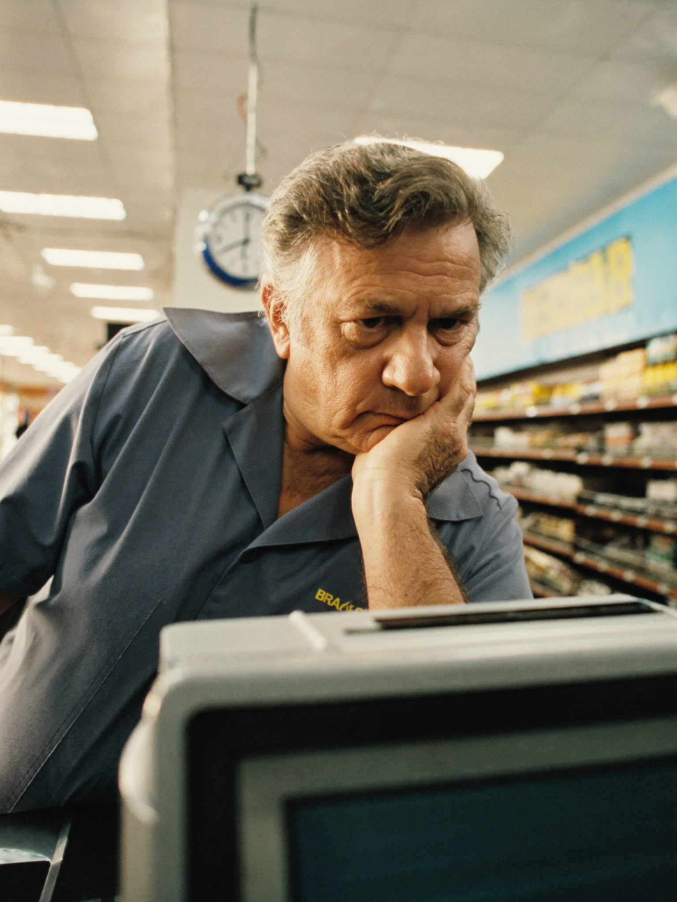

Atlas
Verdades que
o RH precisa
ouvir
sobre clima
e pessoas
Atlas
Ninguém reclamar não significa que o time está bem.

Atlas
Turnover baixo não significa equipe engajada.
Atlas
Equipe ocupada não significa equipe motivada.
Atlas
Se o seu melhor talento pedisse demissão amanhã, você saberia o motivo?
Atlas
O Atlas Clima mostra como o time está, por área e por liderança, antes de alguém pedir demissão.
Conheça o Atlasnexatech.ia.br